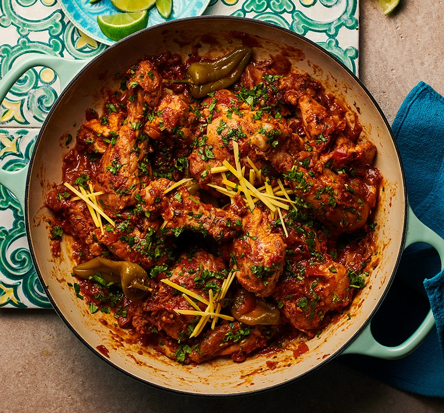

Home
Chicken Karahi

Description
Karahi (also called kadai/kadhai) is named after the deep, circular wok-like cooking pot it's cooked in. While the pot has ancient roots in the Indian subcontinent, chicken karahi emerged in the North-West Frontier Province (now KPK province) of Pakistan. The dish became famous through the Malik Karahi restaurants of Peshawar and later spread to Lahore's Food Street. Unlike older, more complex Mughlai dishes, karahi represents a more rustic, straightforward cooking style.
Pakistani karahi is cooked fast on high heat and an open fire, with minimal spices, letting the tomato and meat flavours dominate, and oil separation is essential. As a rule, karahi is served in the same pot it's cooked in.
Ingredients
- 1 Bay Leaf
- 2 Small Cinammon Sticks
- Couple of Whole Black Peppers
- 1 Tbsp of Ghee
- 1 Tbsp of Yogurt
- 2 Medium Tomatoes
- 1 Medium Chicken Breast (200g approx)
- 1 Tsp Kashmiri Red Chili Powder
- 1 Tsp Corriander Powder
- 1 Tsp Garam Masala
- 1/2 Tsp Salt (or to taste)
- 1/2 Tsp Turmeric
- 1/4 Tsp Cumin
Steps
- Heat some Ghee in a Pot. Once the pot is hot enough, add in the whole spices (Black Peppers, Cinammon Sticks, Bay Leaf). Let them cook for a bit until fragrant
- Add in the Cubed Chicken Breasts to cook.
- Once chicken is cooked, add the tomatoes. Two ways to do this.
- Make puree of tomato using grater and add the puree to the pot.
- Cut the tomatoes in half, and rest them on top of the chicken in the pot, and let them steam. Once steamed peel the skin off and crush tomatoes to form a puree.
- Let the tomatoes cook down for a bit with the lid on.
- Once tomatoes are cooked and the pot is arguing back, add salt and the spices (Corriander Powder, Kashmiri Red Chili Powder, Garam Masala, Cumin, Turmeric). Mix well
- Let it simmer for about 10 mins on medium heat.
- After 10 mins, add the yogurt and let it simmer for another 5 mins.
- Once the liquid has mostly evaporated the Chicken Karahi is ready to be served.
- Enjoy!